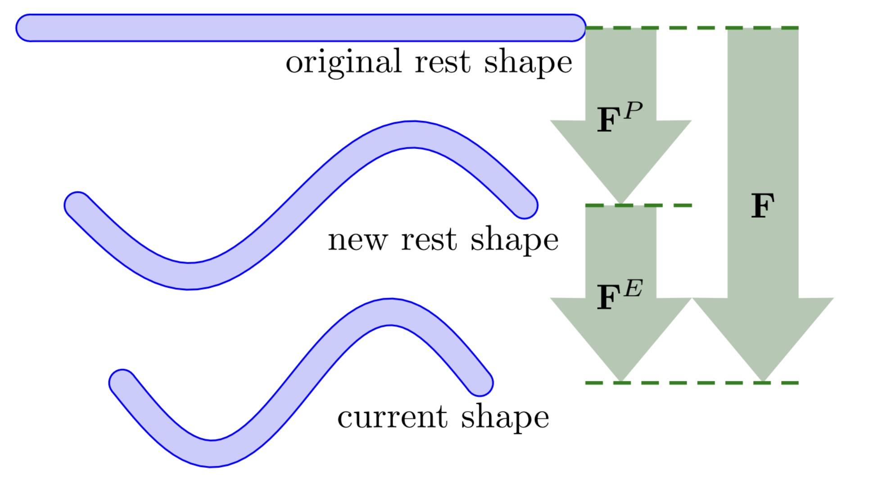

Discretization of Plastic Flow
Plasticity is introduced into MPM by multiplicatively decomposing the deformation gradient into elastic and plastic parts:
Here, represents the accumulated irreversible deformation, while captures the recoverable elastic deviation from the plastically deformed configuration.
This decomposition separates material behavior into two parts:
- The plastic part stores permanent changes (e.g., bending a metal rod into a spring),
- The elastic part responds to current deformation relative to that shape (e.g., compressing the spring slightly).

Stress is computed solely from using the hyperelastic constitutive model. Plastic flow is triggered when stress exceeds a material-specific limit and updates to ensure the stress stays within the yield surface.
Definition 26.1.1 (Yield Surface). We define a Yield Condition on the Kirchhoff stress derived from . The boundary is known as the Yield Surface. When elastic stress exceeds this surface, plastic flow is triggered to restore admissibility.
This framework cleanly separates recoverable and permanent deformation by computing stress from and evolving under plastic flow.